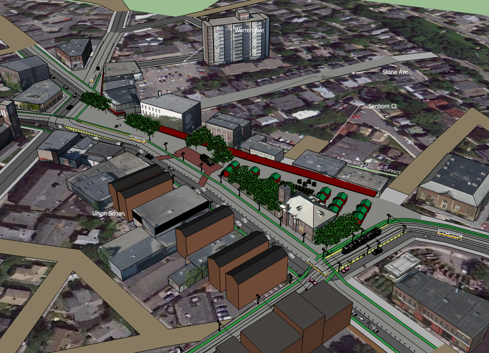
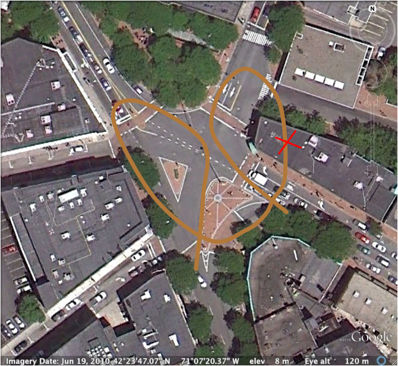
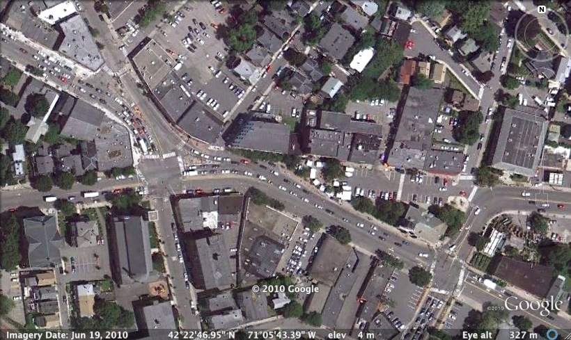
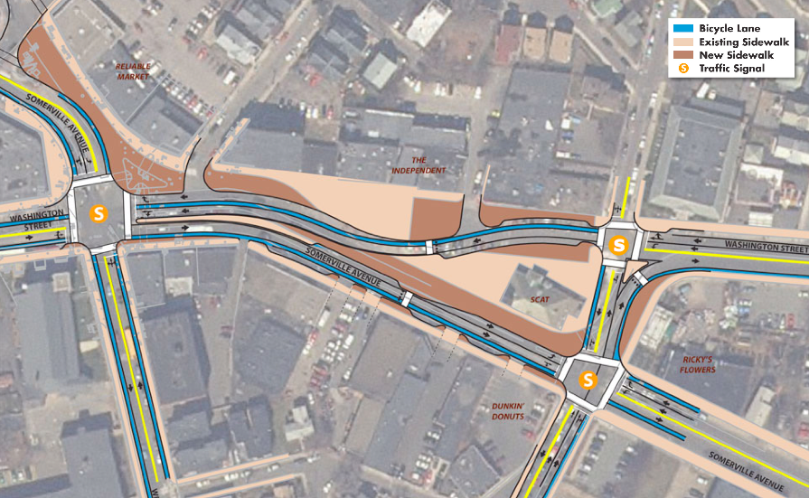
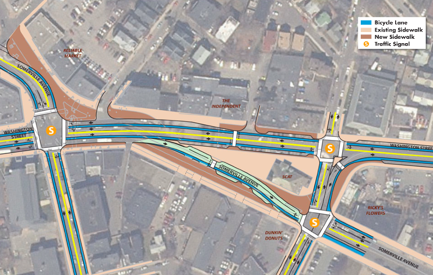
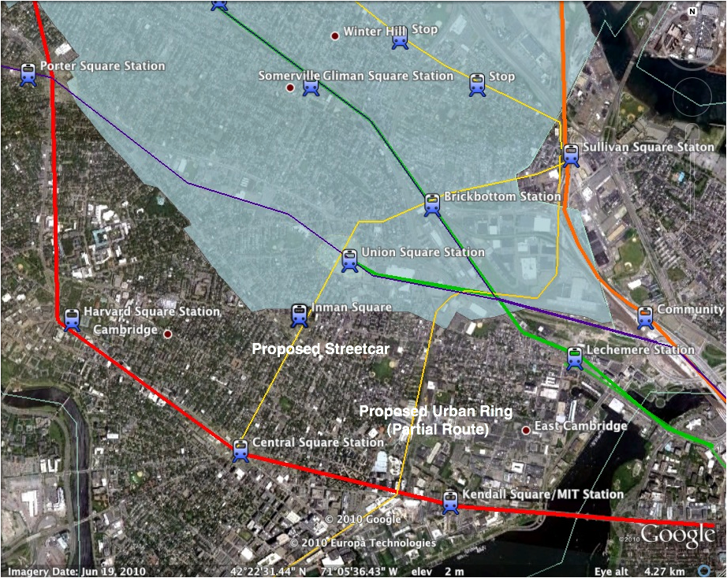
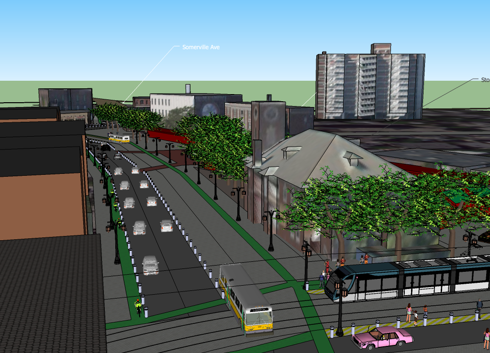
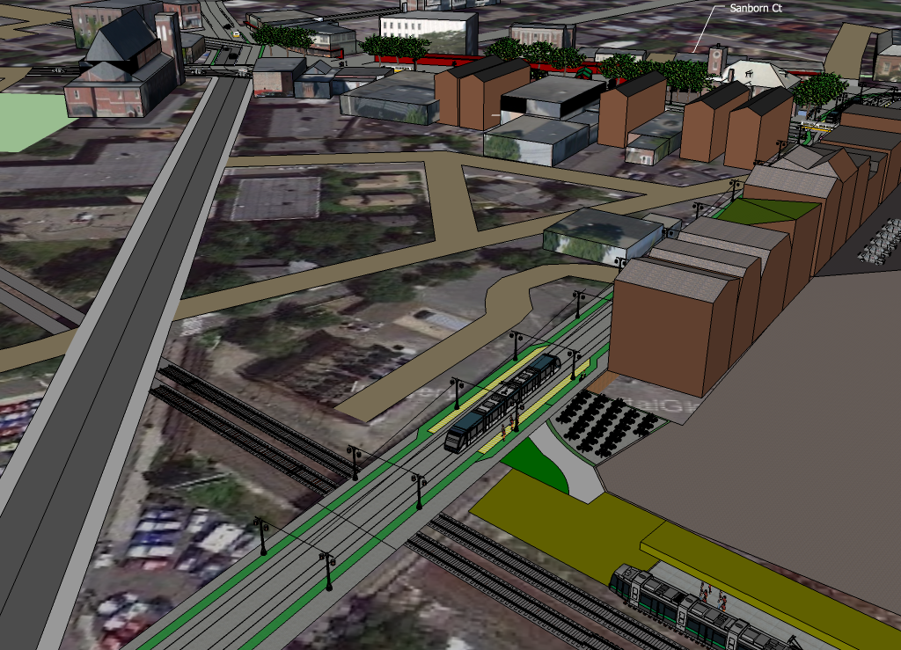
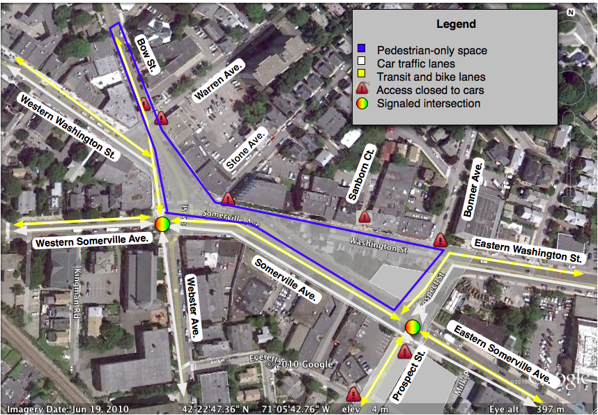

Union Square and Prospect Street Pedestrianization in Somerville
1.252/11.540/ESD.225 Urban Transportation Planning. MIT
Andy Likuski
Graduate Student, Tufts Department of Urban and Environmental Policy and Planning
November 9, 2010
Executive Summary
Union Square will be the city center of Somerville. Somerville's diverse neighborhoods have strong identity but uninspiring physical form. Union Square will create a destination at the city's crossroads, one that trumps the success of Davis Square and represents a viable alternative to Harvard and Central Square, and Boston's most popular destinations. The current plans put forth by the city of Somerville fail to adequately serve this potential reality. They fail to serve the physical space, the mobility requirements, and shifting preferences of young and upcoming generations. A very different plan is desirable, one that emulates the dramatic successes throughout Europe at creating city center destinations.
To following plan is set forth to effect dramatic improvement: Union Square will form a pedestrian oasis from its core and stretch down the length of Prospect Street to Inman Square in Cambridge, strategically intersecting the new Green Line station. Prospect Street will host the region's first modern streetcar line, negating the Green Line as a rail terminus and enabling comprehensive rail access from Union Square to Inman and Central Square to the south, and the main Green Line branch at Brickbottom Station and Sullivan Square to the north-east. In effect, the streetcar line will be a joint initiative by Somerville and Cambridge to begin the desperately needed Urban Ring along a better radius than the current plans envision. Union Square itself will no longer be pretzel of asphalt streets like those which chaotically carve up Davis Square, but will instead serve pedestrians foremost and confine traffic to a simple, sane path around the southern perimeter of the square with minimum intersection between cars, transit, bikes, and people. The square will nurture pedestrian activities in order to improve commerce and community cohesiveness. A permanent market area and gathering space will attract visitors at all hours of the day and enable vibrant night life indoors and outdoors on the square. Businesses along the north perimeter of the square will gain access to outdoor seating space that converts to a protected pedestrian walkway in cold weather. Pedestrians, bikes, and transit can move virtually unobstructed throughout the square. The city will densify business and residence in Union Square with new buildings along the city-owned parcels east of Prospect street. I will also relocate its municipal headquarters to Union Square, further reinforcing the square's importance.
Traffic patterns and access to the square will eliminate drive-through style service. Much of the auto through traffic through Union Square will be diverted at little cost to the overall network, and many trips will be eliminated in favor of more efficient modes. Most auto trip times that bypass the square will be increased by only a couple minutes. Destination auto traffic will have much more confined access to the square. On-street parking space will be repurposed and the city will temporarily located an off-street surface lot on vacant land adjacent to the square. As other travel modes improve and the square grows in popularity, the off-street lot will be further reduced in favor of better uses for the land. Transit speed and reliability will remove many minutes from trip times and create a positive feedback effect by attracting more riders and hence increasing frequency. Plentiful space in the square will be allocated for goods deliveries, and Prospect Street will open to deliveries at scheduled times during the day.
Financing of this plan beyond the city's current plans mainly adds capital cost in terms of paving surface improvements to Union Square and Prospect Street, and implementing streetcar service between Sullivan Square and Central Square. Capital costs for the two mile streetcar service will be approximately $100 million. It will necessarily to exclude exhausted state resources and instead depend on revenue raised by Somerville and Cambridge and matching federal funds. The cities can fund their share of the costs with assessments on building owners and businesses directly benefited by the transit route. With a 60/40 federal match, the cities would split a $40 million capital obligation, which could be funded over 30 years, making the yearly capital financing and debt service reasonable. The service should be operated by the MBTA, which will share operating and maintenance expenses with the cities.
This new plan does not attempt anything more dramatic than what is happening in moderate sized cities throughout Western Europe. By properly duplicating a proven model, Somerville will demonstrate strong sustainability merits and improve livability indicators throughout the city. Urban planning that overhauls the entire streetscape and use of space wins accolades from media and leaders, bringing prestige and dollars to the city for helping their citizenry live better. Somerville's current plans do no such thing, they envision Davis Square II, not a city center.

Bird’s eye view of Union Square from the south.
Introduction - Avoiding another Davis Square
Davis Square succeeds for its strategic location near Tufts University and the Cambridge red line stations. It combines interesting shops, bars, and eateries with pockets of useful public space. The plan for Davis Square prepared in 1982 succeeded in transforming an area bisected by freight trains and plagued by dismal sidewalk and traffic conditions. While Davis Square’s success has been dramatic, the street design exemplifies another era of thinking: “Two concurrent rotary (roundabout) patterns are formed by one-way traffic on Highland Avenue and Elm Street in conjunction with two other adjoining streets. This give motorists looking for on-street parking the option of recirculating through the square” (Project for Public Spaces, 1998). Today, traffic is terrible in Davis Square. Congestion regularly backs up the feeder streets up to a quarter mile, blocking transit and even bicyclists. The intersection of the square is treacherous, with a long confusing signal cycle that leaves pedestrian darting across multiple streets without signal protection. Significant pedestrian space is limited to the northern plaza of the square and the community path that replaced the railroad.

Davis Square’s road intersection nearly forms a pretzel shape, creating a sophisticated car junction but making little more than islands of public space amidst the heavy traffic.
Current Union Square plans hopes to duplicate Davis Square’s commercial success but seem to take its public space failures along with the package:
  
Present day Union Square followed by three proposed options for redevelopment by Howard/Stein-Hudson Associates. (Howard/Stein-Hudson Associates 2009)
Although the pictured plans attempt to improve current conditions, there remains a clear intent to satisfy the connections between every feeder street participating in the square. The plans either cut up the square with multiple streets or create on large street. The intersections remain poor for pedestrians, requiring up to two intersection crossing to access what remains of any pedestrian space. There is a clear preference for auto traffic management over pedestrian movements. If walking from the Green Line station to the south and accessing the businesses on the north side of the square, it would require two or three intersection crossings by pedestrians.
A Distinct Proposal for Union Square
Mobility challenges of redevelopment:
The location of the Green Line station outside of Union Square on Prospect Street has been viewed as an obstacle to redeveloping the square. Clearly, having subway head houses in the square, as Davis, Harvard, and Central Squares attest, is highly desirable. However, the location gives Somerville the advantage to expand the scope of redevelopment of the square down Prospect Street, which is abutted by city-owned brown fields on the east side and other properties eligible for redevelopment on the west. Having already identified this potential, the city is taking steps to clean the brown field parcels ahead of development (Somerville Strategic Planning and Community Development, 2010). Omitted from most studies of Union Square is the need for rail connectivity from Union Square to Cambridge and other rapid transit lines. Popular Inman Square is only a ten minute walk south from Union Square and seven minutes from the new Green Line station. Central Square with Red Line service is a twenty walk from the Green Line Station. Currently this route is served by the MBTA 91 bus. Even with an improvement in service frequency, the 91 will be inadequate for connecting Union Square with Inman and Central Square.
Mobility Challenge Solutions:
Streetcar Service. Historically, streetcar service ran from Sullivan Square along Washington St. to Union Square, along Webster Ave. to Inman Square, and along Prospect St. to Central Square (Wikipedia Contributers-Boston Eleveated Railway). The new streetcar will commence at Sullivan Station to the north and run along Washington St. to Union Square, whence it will run south the length of Prospect to Central Square. It will connect the Sullivan Station Orange Line Station, the new Brickbottom Green Line Station, the Union Square Green Line Station, Inman Square, and Central Square. The streetcar should be considered the first rail phase of the long sought Urban Ring around the Boston Metropolitan area. Though the Urban Ring is currently envisioned to run through Cambridge further east along the old Grand Junction Railroad right-of-way through MIT, the route through Union Squared better serves existing centers. The streetcar must function with signal priority and limited stops (one-quarter to one-half mile apart) to make its service substantially better than the bus. Therefore the 91 bus may need to shadow the streetcar line for more local service.

Proposed streetcar line and other rail based transit north of Boston. The shaded area is Somerville.
Closing Prospect Street to automobile traffic is not drastic, since Webster Ave. connects Union Square and Inman Square and crosses Prospect St. at the Green Line Station. Additionally many small and large streets meets Prospect Street, making it prime for a pedestrian street that is easily reachable by all modes. The intersection of Webster Ave at Prospect St. will remain active for automobiles, whereas all minor streets will be blocked to automobiles with movable bollards.
Buses. Buses should be given the same right-of-way that is being prescribed for bikes in the current plans. When space does not allow for dedicated transit lanes, the approach into the square should at least contain a maximum length dedicated lane to bypass auto congestion. This avoids the acute problem in places like Davis Square, where buses entering from College Avenue needlessly back up several light cycles behind cars, Removing about ten on-street parking spaces to create a bus lane would solve this problem. By giving buses dedicated right-of-way, key corridors can be left available to upgrade to modern streetcars, further increasing transit ridership and environmental improvements.
Bikes. Bikes need dedicated lanes that are not wedged between car traffic and car parking. This is a deadly formula and results in a significant number of “doorings” of bikers by driver side doors every year in Somerville. By dedicated lanes to transit and bountiful space to pedestrians, it is easy to construct cycle tracks completely separated from automobile traffic through Union Square. The elimination of on-street parking from Union Square removes all dangerous interactions between cars outside of street intersections. Bike lanes will always run adjacent to pedestrian areas on their right side. Where possible, bike lanes will run adjacent to transit lanes on the left side to allow safer passing of other bikes using the transit lane.
Other Access. Most pedestrianized streets permit limited vehicle access. Residents with driveways on Prospect St. will maintain access to their driveways, though large parking lots like those near Central Square will need to be repurposed. Deliveries will be permitted at limited times, as indicated by signs. Emergency vehicles will maintain access and provisions will be made for handicap needs.

Looking into Union Square from the corner of Prospect St. and Somerville Ave. Buses and bikes each have two-way rights-of-way running along the southern perimeter of Union Square. The streetcar traverses the east side of the square within a transit right-of-way. Traffic signals will give signal priority to transit. Cars must stop at the intersection and yield to pedestrians, bikes, and transit. (Traffic signals are ommited for simplicity.)
A bird’s eye view looking northwest from the south. The Green Line station is intersected by Prospect St., which offers streetcar service and a pedestrian thoroughfare.
Union Square public space problems:
Pedestrianized city centers are so popular in Western Europe that they will soon be the norm rather than the exception. European city centers are denser with more diverse land uses than in North America, but this does not preclude American cities from following the model of car-free city centers served by streetcar (a.k.a tramway in Europe).
Union Square public space solutions:
City Center. Union Square’s centrality and new transit accessibility makes it the natural choice for the city center of Somerville. The city is already considering moving its municipal headquarters to Union Square to solidify its commitment to the square’s redevelopment.
Parcel redevelopment. The brownfield area owned by the city of Somerville along Prospect St. will be sold for development from the curb approximately fifty feet back. This will allow new stores and services, and upper floor apartments to line the pedestrian street.The city may reserve some of these parcels for its new administrative location. The area behind the buildings should be maintained by the city for future development considerations. It may serve temporarily as paid parking to compensate for the on-street parking removed from Union Square and the approaching streets. As car-dependence diminishes the space can be repurposed for more development or park space.
Pedestrian Dominance. If a square is to be for people then it should not be carved into asphalt streets, as is the result in Davis Square and present-day Union Square. The extensive area dedicated to automobiles will be replaced with an entire pedestrian zone through which cars, transit, and bikes may pass with caution at the fringes. This will make the area much more safe and encourage through traffic to use other routes that are not yet popular public squares. Motorized traffic and bikes will utilize the south perimeter of Union Square. With no major through-streets intersect indirecty from the north, it is more practical to dedicate the space to pedestrians on the north half of the square, as demonstrated by the current termination of Washington Street.
Automobile Access. The configuration of street access to Union Square that allows for a simple network requires eliminated some of the access. Additionally, no street entering or exiting the square will have more that one lane of car traffic per direction. Nor will left and right turn lanes remain. Instead, extra lane space is dedicated to transit and bicycle access to the square. The new configuration will make it automobile passage through the square slow. Speed limits will restrict cars to 15 mph. Fortunately, the elasticity of route choice should keep back-ups into the square reasonable, as drivers learn to avoid the square if it is not their destination.

Summary of the proposed traffic changes to Union Square.
Northern Perimeter. Starting from the north-west and running clock-wise, Bow Street, Warren Ave, Stone Avenue, Sanborn Court, and Bonner Ave will no longer be connected to Union Square for automobile traffic, (though Sanborn Court may have an exception for users of the parking lot.) Bikes, pedestrians, and emergency vehicles can continue to connect with these streets. The MBTA 85 bus can still access Bow Street from Union Square.
Eastern Perimeter. Continuing clockwise, eastern Washington St. will be made one-way to only permit auto traffic entering the square. Transit and bikes will maintain two-way access. Traffic from eastern Washington St. is immediately directed south to the intersection of Prospect St. and Somerville Ave. The dead-end parking of Washington St. will be removed, though some space will remain for truck deliveries. Eastern Somerville Ave will create a one-way pair with eastern Washington Street, only allowing cars to exit the square. (This configuration is similar to Highland Ave. and Elm St. in Davis Square.) Since both eastern Washington St. and Somerville Ave. connect to McGrath Hwy a quarter-mile from the square, there is no great sacrifice in making these streets one-way. As previously mentioned, Prospect St. will be closed to automobiles and accessible to all other modes. The eastern side of Union Square will therefore reduce car traffic to a three-way intersection of two one-way roads and a two-way road. Since transit and bikes will continue to enjoy full street access, the intersection will be four-way for non-auto modes. Signals will supercede automobile traffic to allow transit to pass, and automobiles will yield to all bikes and pedestrians at the intersection.
Western Perimeter. Webster Avenue will become open to both directions of traffic to compensate for the pedestrianized Prospect St. Western Somerville Ave. and western Washington Ave. will also maintain two-way traffic. As mentioned, Bow St. will limit access to non-auto modes. The combination of both sides of Somerville Ave, western Washington St., and Webster Ave. will create a four-way intersection in the south-east corner of the square. The signals will give transit priority. Cars will be permitted to make unprotected left-turns.
Parking. On-street parking will be completely eliminated from Union Square and the for at least a block of the feeder streets. The eastern area of the brown field parcels along Prospect street may serve temporarily as paid parking to compensate for the removal of on-street parking Union Square and the adjoining blocs.. As car-dependence diminishes the space can be repurposed for more development or park space.
Traffic routing. Through traffic approaching Union Square from the west will be encouraged by lack of capacity in Union Square to instead use Highland Avenue to connect to McGrath highway. This will add very little time to a typical trip. For instance, the drive time from Central Street and Somerville Avenue to McGrath highway is currently about 4 minutes to go 1 mile. Rerouting traffic north on Central Street to Highland Avenue results in a trip that takes 5 minutes to go 1.6 miles. Assuming no new congestion on the detour, this is an acceptable increase in travel time.
New Amenities. A permanent outdoor market will be located where the continually occurring farmer’s market and parking lot are currently situated. Permanent stalls will be installed as well as long tables for eating. The market place will be modeled loosely after Munich’s Viktualienmarkt. Additionally, a space extending twenty feet along the north perimeter of the square will be dedicated to outdoor seating for restaurants, bars, cafes, and open public seating. This area will be converted to a weather protected promenade during the colder seasons, creating a temporary arcade with heated gathering areas. The pedestrian area will extend beyond the square to the north-west along Bow St. as war as Walnut St in order to benefit the businesses established just outside the square.
Deliveries and pickups. Two spaces are provided for truck deliveries in Union Square. One is in the center of the square and one where Washington St. enters the square from the west. Deliveries may be allowed throughout the day or limited to certain periods. Deliveries along Prospect St will be limited to certain types of day, as is common on European pedestrian streets.
Implementation
A rough outline of the implementation steps for the Union Square redevelopment and Prospect St. streetcar as as follows.
Union Square
Somerville-Cambridge Streetcar
Traffic Impact
The most controversial aspect of this project will be the fears of increased traffic problems in Union Square. The goal of this design is to strongly discourage automobiles from passing through Union Square by limited travel lanes, access, and speed. The plans gives cars least priority, making them yield to all pedestrians at any point in the square, as well as all transit and bicycles at intersections, and limiting their speed to 15 mph. These measures are the only way to make a safe public space that allows any car use at all. The best outcome from a traffic standpoint would be to initially have a continuous congested line of traffic through the square. Although unideal from an environmental perspective, this would send a strong signal that through traffic is to be route itself elsewhere, leaving a tolerable queue of cars entering the square for those who have a destination there. All of the streets around the square are accessible by routes that do not traverse the square. Drivers will quickly learn preferable routes.
The impact on areas surrounding the Union Square should be minimal. As already mentioned Highland Ave. to the north is a reliable alternative to bypass Union Square and access McGrath Hwy. To the south Beacon St. passes through Inman Square, and will serve as another alternative until intense traffic calming occurs there as well. Cambridge is clearly dedicated to traffic calming and will be unwilling to accept much traffic diverted to its streets.
Closing Prospect St. to cars should pose little difficulty to Somerville, unless the redevelopment on Prospect St. at Union Square is auto-oriented, which is highly undesirable. Cambridge may initially have to permit intersections with Prospect St. at Inman Square, Broadway, and Harvard St. but there is enough redundancy in the north-south road network to pedestrian the entire length of the street.
Financing
The capital expenditures in Union Square beyond the existing proposals are fairly modest, with the exception of the streetcar service. Most additionally funding in the square will be focused on dramatically improving the entire paving area to resemble that which has already been installed in the pedestrian area where Washington St. terminates. The city, in effect, needs to convert the space from a network of asphalt roads and cement sidewalks to a plaza. The dazzling effect an long-term benefits of avoiding asphalt use in place of paving stones should justify the transition. Additional investment will be needed to reinforce the areas that host truck deliveries and pickups. Construction of the permanent market can likely be financed by leasing out some of the stalls while leaving some open to rotating food vendors.
In order to finance the two mile streetcar from Sullivan Square to Central Square, one can compare the capital costs to similar systems in the United States. The proposed Portland Streetcar Loop is estimated to cost about $50 million dollars per mile, thus $100 million is a reasonable estimate for the Somerville-Cambridge line, especially since both would connect to existing maintenance facilities. It will necessarily to exclude exhausted state resources and instead depend on revenue raised by Somerville and Cambridge and matching federal funds. The cities can fund their share of the costs with assessments on property owners and businesses directly benefited by the transit route. With a 60/40 federal match, the cities would share a $40 million opening year capital obligation, which could be funded over 30 years, making the yearly capital financing and debt service reasonable. The service should be operated by the MBTA, which will share operating and maintenance expenses with the cities.
Portland Streetcar Loop versus the proposed Somerville-Cambridge Streetcar
Portland Streetcar Loop Information is based on its Summary Financial Plan (Oregon Metro 2010) |
Somerville-Cambridge Streetcar Estimates |
|
Length of track |
3.3 miles |
2 miles |
Opening Year Capital Costs |
$146,915,000 |
$100 million |
Federal Contribution |
$75 million
|
$60 million
Based on 60% federal match presumed in the anticipated Federal Transportation Bill. |
State Contribution |
$20 million (Lottery Bonds) |
$0 The state has maxed out its ability to fund current MBTA expansion projects with bonds. It cannot be assumed that funding would become available. |
Regional Contribution |
$3,733,000 (Metro Transportation Improvement Plan) |
$0 The MBTA currently has no budget for additional capital improvement plans. |
Local Contribution |
$27,182,000 - City of Portland Tax Increment Funds $15 million - Local Improvement District $6 million - Portland System Development Changes |
$40 million See below for a local funding breakdown. |
City Population |
582,130 |
Somerville: 74,405 Cambridge: 105,594 |
Population Density |
Portland’s system would be largely used by non-residents, thus density is not a reliable indicator of usage. |
Somerville: 18,147.6/sq mi (7,019.3/km2) (Wikipedia Contributers-Somerville, 2010) Cambridge: 16,422.08/sq mi (6,341.98/km2) Somerville is the 17th densist city in the United States as of the 2000 census. Cambridge is 30th. (Wikipedia Contributer-Somervilles, 2010) |
City’s 2010 Budget |
$2,751,638,556 (City of Portland 2010) |
Somerville: $171,879,903 (City of Somerville 2010) Cambridge: $459,705,025 (City of Cambridge 2010) |
A comparison of the Portland Streetcar Loop funding plan to a Somerville-Cambridge funding plan. Portland enjoys strong regional and state transit support, whereas Somerville and Cambridge cannot currently rely on regional or state funding, especially because funding is already dedicated to the Green Line extension.
Notable Benefits
A vastly improved Union Square will set a new standard for redevelopment in the Boston Metropolitan area. Whereas the current plans for Union Square will result in comparisons to Davis Square, a square built for pedestrians and transit will be compared to projects worldwide. This would bring more accolades to the city and increase funding for other projects. From a health perspective, the reduction of car use in the square and removal from Prospect Avenue would create the first clean air zones in a Somerville business district, a great improvement to all other business districts in the city that are plagued by large volumes of car and truck emissions.
By creating more redevelopment opportunities along the length of the new streetcar line, the effects of gentrification can be dampened somewhat. Clearly, gentrification will continue in Union Square under any plan with the arrival of the Green Line. The key to reducing the gentrification is to create desirable places to live throughout Somerville. The addition of the proposed streetcar line, the Green Line extension, and an additional streetcar line along the 3 mile length of Broadway would bring quality rail transit to all residents of Somerville, and spur development in all business districts.
Increased driving times and better rail transit connectivity means less drivers, which is good for almost everyone. Reducing car use has more far-reaching effects than managing congestion.
Alternatives
There are a number of possible alternatives to the project plan that maintain the spirit of highly pedestrianized space. The streetcar service could be moved from Prospect St. to Webster Ave. between Union Square and Inman Square and mimic the current route of the 91 bus, which was itself based on streetcar service on Webster Ave and Newton St. (Wikipedia Contributers-Boston elevated railway). Since Webster Ave crosses Prospect St. just south of the Green Line station, the connection to the streetcar on Webster Ave would be trivial. However, the amount of development proposed for Prospect Ave. and it’s straight line to Central Square makes it a much better candidate for a pedestrianized street.
A no streetcar option is also feasible, but it would severely detract from the effect of plan, with the same connectivity shortcomings as the city’s current plans. A BRT (Bus Rapid Transit) bus in place of the streetcar on Prospect St. would be confused with other types of bus service such as Boston’s Silver Line, which established a very low standard for BRT in Boston.
Building a Constituency for the New Proposal
Politicians and business owners will likely cling to the status quo for redevelopment in the area, which means an out-dated Davis Square model for Union Square. The best hope for change is to deliver a better plan to the citizenry, one that brings highly useful pedestrian space and quality cross-town rail service at a cost that can be absorbed by the business improvement opportunities. This plan, or the best ideas it contains, should be presented to Union Square neighborhood groups and public officials who are still seeking a final plan for Union Square. The plan should also be submitted to the media for consideration.
Conclusion
It is confusing why good ideas can be hard to copy. The redevelopment of city centers in Europe are fully relevant to Union Square given the clustering of neighborhoods throughout Somerville and Cambridge and the high population densities. Even if Somerville forgoes a highly pedestrianized plan for Union Square, cities elsewhere in the country will not miss the same opportunity. Their redevelopments will outshine Somerville’s “Davis Square Revisited” implementation. Somerville may be able to work its way to a pedestrianized plaza served by streetcars with decades of incremental changes, or it could use the best models that are available now instead of playing catchup for decades to come. There is nothing unique about my plan with respect to European city center projects. Somerville can overcome transit funding shortcomings at the state level with creative funding techniques and build a Union Square that will pay for itself and be a worthy center for an important city.
References
Bluestone Planning Group, and City of Somerville. 2003. Union square master plan.
City of Cambridge. 2010. Annual budget 2010-2011. , http://www2.cambridgema.gov/CityOfCambridge_Content/documents/FY11-Combined-Submitted-Budget-for-web.pdf.
City of Portland. City of portland, oregon fiscal year 2009-10. in City of Portland. [cited 9/8/2010 2010]. Available from http://www.portlandonline.com/omf/index.cfm?c=51313&a=268836 (accessed 9/8/2010).
City of Somerville. City of somerville, massachusetts proposed fiscal year 2010 municipal budget. in City of Somerville. [cited 9/8/2010 2010]. Available from http://www.somervillema.gov/cos_content/documents/CityofSomervilleFY10Budget.v6-July-8.pdf (accessed 9/8/2010).
Howard/Stein-Hudson Associates. 2009. Union square roadway and streetscape improvements.
Oregon Metro. Portland streetcar loop project environmental assessment executive summary. in Oregon Metro. [cited 9/8/2010 2010]. Available from http://library.oregonmetro.gov/files/020108pdxscloop_ea_b.pdf (accessed 9/8/2010).
Project for Public Spaces., Transit Cooperative Research Program., and National Research Council (U.S.). Transportation Research Board. 1998. Transit-friendly streets : Design and traffic management strategies to support livable communities. Washington, D.C.: Transportation Research Board, National Research Council : National Academy Press.
Sightline Institute. Portland-area population density map. in Sightline Institute. [cited 9/8/2010 2010]. Available from http://www.sightline.org/maps/maps/sprawl_port_cs05m (accessed 9/8/2010).
Somerville Strategic Planning and Community Development. Union Square/Boynton yards. 2010. Available from http://www.somervillema.gov/Section.cfm?org=OSPCD&page=1376 (accessed November 8, 2010).
Wikipedia contributors. Boston elevated railway in Wikipedia, The Free Encyclopedia
Union square (somerville) in Wikipedia, The Free Encyclopedia 2010.